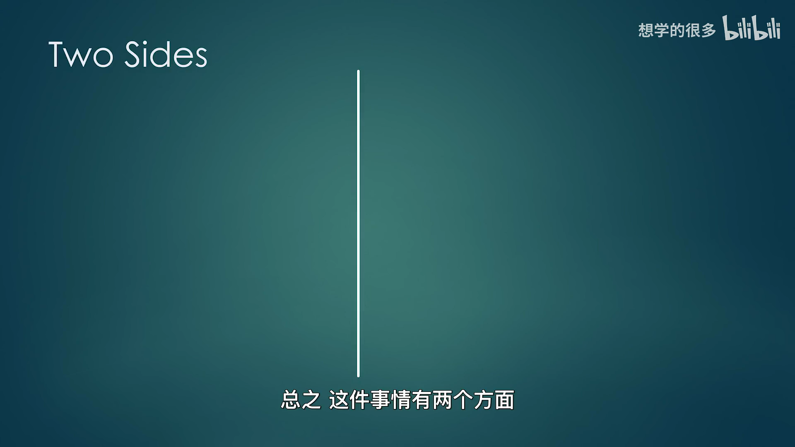
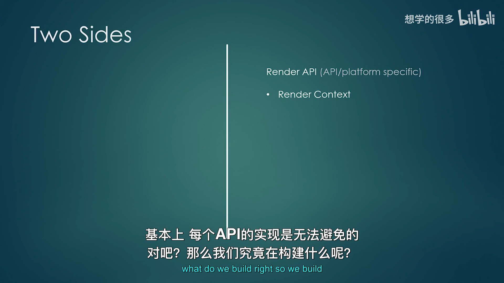
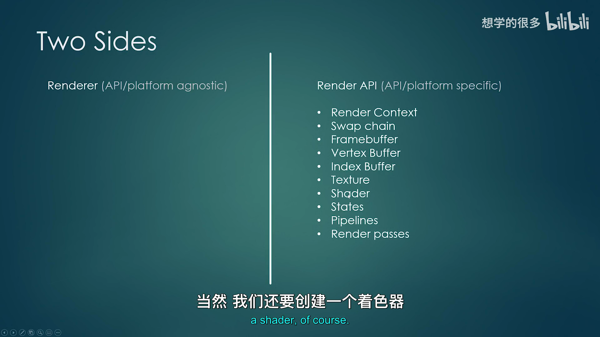
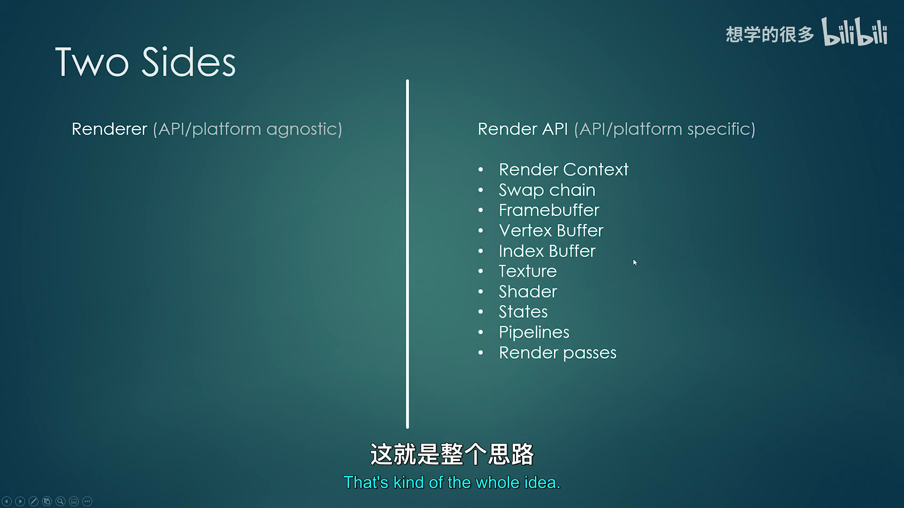
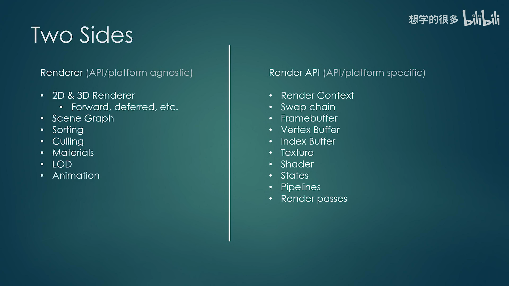
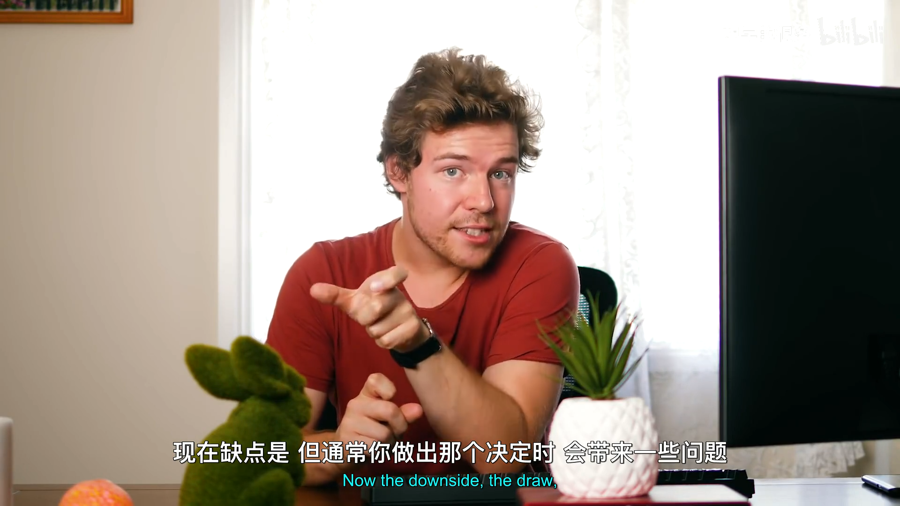
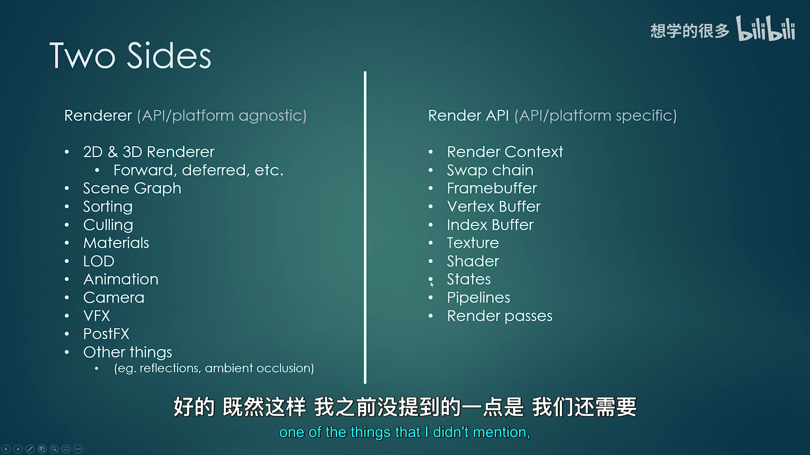
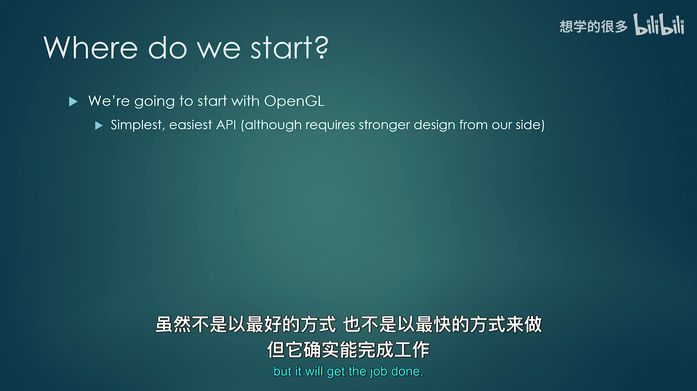

Hazel 游戏引擎笔记 024：渲染架构
本节来源：The Cherno 游戏引擎系列第 24 讲“渲染架构”，时长约 27 分 53 秒。
原课程与 Hazel 代码作者：The Cherno。
本文由视频字幕重构、翻译并整理，不是官方教材。
编者说明：本讲是架构设计演示，没有对应代码提交；文中的接口与职责分层是设计方向，不是已经完成的实现。
本节目标
上一讲讨论了为什么渲染困难。本讲把问题拆成两个主要区域：
- Render API：与 OpenGL、Vulkan、DirectX、Metal 等具体图形 API 绑定的底层实现；
- Renderer：与图形 API 无关的场景组织、排序、剔除、材质和渲染技术。
目标是让上层 Renderer 只使用 Hazel 自己定义的抽象接口。将来更换图形后端时，Renderer 的业务逻辑尽量保持不变。
graph TD
A[Renderer 上层逻辑] --> B[Hazel Render API 抽象]
B --> C[OpenGL 实现]
B --> D[Vulkan 实现]
B --> E[DirectX 实现]
B --> F[Metal 实现]

📷 渲染系统分成 API 专用区域与平台无关的 Renderer 区域
回到原视频 (00:02:21)
1. 术语约定
视频明确说明，“Render API”这个术语不是来自统一教材，而是为了本系列讨论而采用的命名。
本文沿用：
- Render API：Hazel 为图形后端建立的抽象，以及它在 OpenGL、Vulkan 等后端上的具体实现；
- Renderer：使用 Render API 的高层渲染系统；
- 图形 API：OpenGL、Vulkan、DirectX、Metal 等第三方接口。
“API”一词在这个系列中有两种语境，需要根据上下文判断。
2. Render API 区域
(参考时间: 00:04:00)
Render API 区域负责与具体图形 API 直接交互。最重要的抽象资源包括：
| 抽象资源 | 作用 |
|---|---|
| Render Context | 管理当前图形上下文 |
| Swap Chain | 管理可显示图像并提交到屏幕 |
| Framebuffer | 作为渲染输出目标 |
| Vertex Buffer | 上传顶点数据 |
| Index Buffer | 上传索引数据 |
| Texture | 管理纹理资源 |
| Shader | 管理着色器与相关反射信息 |
| States | 保存渲染状态 |
| Pipeline | 描述固定功能与着色器阶段组合 |
| Render Pass | 描述一组渲染输出与附件 |
这些对象在不同图形 API 中差异很大，因此需要多个后端实现。
graph TD
A[Render API] --> B[Context / SwapChain]
A --> C[Framebuffer / RenderPass]
A --> D[VertexBuffer / IndexBuffer]
A --> E[Texture / Shader]
A --> F[States / Pipeline]
B --> G[OpenGL Implementation]
C --> H[Vulkan Implementation]
D --> I[DirectX Implementation]

📷 Render API 区域包含上下文、缓冲、纹理、Shader、Pipeline 等底层原语
回到原视频 (00:04:00)
3. 用抽象资源绘制三角形
(参考时间: 00:05:50)
Renderer 不应直接写：
glGenBuffers
glBindBuffer
vkCmdBindPipeline
vkCmdDraw
它应该使用 Hazel 的抽象资源：
创建 Render Context 与 Swap Chain
创建 Framebuffer
上传 Vertex Buffer
上传 Index Buffer
创建 Shader
创建 Render Pass / Pipeline
提交 Draw Call
当 Hazel 从 OpenGL 切换到 Vulkan 或 DirectX 12 时，这段 Renderer 逻辑理论上不需要改变。
sequenceDiagram
participant R as Renderer
participant A as Hazel Render API
participant G as Graphics API
R->>A: CreateContext / SwapChain
R->>A: CreateFramebuffer
R->>A: Upload vertex/index data
R->>A: Create shader/pipeline
R->>A: Draw
A->>G: Backend-specific calls

📷 Renderer 通过抽象接口绘制三角形，而不直接调用 OpenGL 或 Vulkan
回到原视频 (00:05:50)
4. Renderer 区域
(参考时间: 00:07:45)
Renderer 负责与具体图形 API 无关的逻辑。
4.1 2D / 3D Renderer
Renderer2D、Renderer3D 或 forward、deferred 等高层渲染方案主要建立在 Render API 原语之上。
4.2 Scene Graph / Scene Manager
场景和图结构描述“世界里有什么”，不应该包含原始 OpenGL 调用。
4.3 Render Sorting
排序目标包括：
- 保持透明物体正确绘制顺序；
- 让使用相同 Material、Shader 或 Texture 的物体连续绘制；
- 减少状态切换。
4.4 Culling
包括视锥剔除、遮挡剔除等，只保留可能出现在画面中的对象。
4.5 LOD
根据距离选择不同精度模型，减少远处网格的三角形数量。
4.6 Animation
骨骼、关键帧、蒙皮等动画系统不直接依赖图形 API。
4.7 Camera
Camera 确定观察矩阵、投影矩阵和可能的 Render Target。
graph TD
A[Renderer] --> B[Renderer2D / Renderer3D]
A --> C[Scene Graph]
A --> D[Sorting]
A --> E[Culling]
A --> F[LOD]
A --> G[Animation]
A --> H[Camera]
A --> I[Material]
A --> J[Post Effects]

📷 Renderer 负责场景、排序、剔除、LOD、动画和相机
回到原视频 (00:07:45)
5. Material 与 Material Instance
(参考时间: 00:13:58)
视频把 Material 简化定义为：
Material = Shader + Uniform Data
Material 保存与某个 Shader 配套的参数。Material Instance 基于同一个 Material，但拥有不同的参数值，例如不同的颜色、粗糙度或纹理。
如果每个材质实例都重新创建一个 Shader 或重新编译变体，成本会非常高。因此典型设计是：
- 多个实例共享 Shader；
- 每个实例保存自己的 Uniform / 参数数据；
- 渲染时绑定共享 Shader，再上传实例参数。
graph TD
A[Shader] --> B[Material]
B --> C[Material Instance A]
B --> D[Material Instance B]
B --> E[Material Instance C]
C --> F[不同 Uniform 数据]
D --> G[不同纹理/颜色/参数]
E --> H[不同实例配置]
Material 属于 Renderer 层，因为它描述的是资源和参数如何组织，而不是某个图形 API 的创建步骤。

📷 Material 是 Shader 加 Uniform 数据，Material Instance 共享 Shader
回到原视频 (00:13:58)
6. 哪些功能必须下沉到 Render API
Renderer 希望尽量通用，但某些高级功能需要图形 API 提供额外能力。
例如：
- Vulkan 有 pipeline、descriptor set、fence、semaphore；
- OpenGL 很多状态和资源管理更隐式；
- 延迟渲染在 OpenGL 与 Vulkan 中的实现方式可能差异很大；
- 实例化需要底层 API 支持；
- Render Pass / Pipeline 的粒度可能直接影响性能。
当通用原语不足时，可以把特定实现下沉到 Render API 区域：
flowchart TD
A[高级渲染技术] --> B{通用 Render API 原语足够吗?}
B -- 是 --> C[Renderer 层只实现一次]
B -- 否 --> D[把部分逻辑下沉到 Render API]
D --> E[每个后端分别实现]
E --> F[更高效但代码重复更多]
下移代码的收益是性能和控制力，代价是需要为每个后端分别写出对应实现。

📷 高级技术可能需要下沉到 Render API 区域，并为每个后端重复实现
回到原视频 (00:10:20)
7. 通用抽象与性能的矛盾
(参考时间: 00:17:43)
理想情况下，一个强大的 Render API 可以让所有渲染技术只写一次，然后自动适配所有后端。
但“通用”本身会带来代价：
- 接口必须兼容所有后端；
- 只能暴露最小的公共能力；
- 高级技术可能需要绕过抽象；
- 完全通用并不等于极致性能。
视频把这个问题类比为通用游戏引擎与专用游戏引擎：
- 通用引擎适用于更多项目；
- 针对单个游戏定制的引擎通常能做得更快、更合适；
- 因此通用 Render API 不可能在所有场景下都等同于直接使用 DirectX 12 或 Vulkan。
这不是否定抽象，而是提醒后续设计必须持续衡量抽象层与性能。
📷 通用 Render API 更容易维护，但可能牺牲高性能后端所需的控制力
回到原视频 (00:17:43)
8. Renderer 与 Render API 的职责表
| 功能 | Render API | Renderer |
|---|---|---|
| Context / Swap Chain | Yes | No |
| Framebuffer | Yes | Uses |
| Vertex / Index Buffer | Yes | Uses |
| Texture / Shader | Yes | Uses |
| Pipeline / Render Pass | Yes | Uses |
| Renderer2D / 3D | No | Yes |
| Scene Graph | No | Yes |
| Sorting / Culling | No | Yes |
| Material System | No | Yes |
| Material Instance | No | Yes |
| LOD / Animation | No | Yes |
| Camera | No | Yes |
| Post Effects System | Partly | Yes |
| Instancing | Yes | Uses |
| Batching | No | Yes |
边界并不总是绝对。例如 Render Pass 既像底层原语，又被 Renderer 控制；Visual Effects 也可能需要 API 支持。
9. Render Command Queue
(参考时间: 00:19:22)
Renderer 与 Render API 之间还需要命令队列。
基本流程：
- 游戏线程提交 Render Command；
- 命令被编码到连续内存缓冲区；
- 渲染线程读取命令；
- 渲染线程调用 Render API 执行；
- 主线程继续处理下一条游戏逻辑或下一帧命令。
sequenceDiagram
participant G as Game Thread
participant Q as Render Command Queue
participant R as Render Thread
participant A as Render API
G->>Q: Encode BindVertexBuffer
G->>Q: Encode BindShader
G->>Q: Encode Draw
Q-->>R: Contiguous Command Buffer
R->>A: Execute commands in order
Vulkan 原生有 command queue / command buffer 概念；OpenGL 没有同样完善的显式命令模型，因此 Hazel 可能需要自己建立。
设计参考有两种方向：
- 尽量模仿 DirectX 的命令风格；
- 设计 Hazel 自己的模型。
视频没有在此时定案。

📷 Render Command Queue 把游戏线程提交与渲染线程执行解耦
回到原视频 (00:19:22)
10. 实现路线
(参考时间: 00:21:11)
10.1 第一步：建立 Render API
先实现 OpenGL 版本：
- Context；
- Swap Chain；
- Framebuffer；
- Vertex / Index Buffer；
- Texture；
- Shader；
- State / Pipeline；
- Render Pass。
目标是至少可以画出一个三角形。
10.2 第二步：建立基础 Renderer
一旦 Render API 能绘制三角形，就开始实现 Renderer，并持续迭代。
随后逐步增加：
- Framebuffer / Render Texture；
- Material System；
- Shader Parser；
- PBR；
- 3D 模型；
- Post Effects；
- 其他高级技术。
flowchart LR
A[OpenGL Render API] --> B[绘制三角形]
B --> C[基础 Renderer]
C --> D[Material / Shader Parser]
D --> E[PBR / 3D Scene]
E --> F[Post Effects]
F --> G[其它图形 API]
10.3 第三步：可选地实现其它后端
Vulkan、DirectX 11 / 12、Metal 会在 OpenGL 路线稳定后讨论。也可能先做场景系统、关卡编辑器、序列化、组件系统和脚本，再回到新图形后端。

📷 实现顺序是 Render API、基础 Renderer、材质与高级渲染，再考虑其它后端
回到原视频 (00:22:53)
11. 为什么仍然先选 OpenGL
(参考时间: 00:21:11)
如果只考虑个人高性能引擎，可能会直接选择 Vulkan。但本项目需要：
- 尽快看到画面；
- 让观众看到可展示结果；
- 避免数集都耗在交换链初始化；
- 留出时间实现场景、编辑器、序列化和脚本等游戏引擎系统。
OpenGL 简单，但不代表设计可以粗糙。因为 OpenGL 隐藏了许多显式控制，Renderer API 反而需要更认真地组织资源与状态。
12. 本节结论
本讲形成了 Hazel 渲染架构的第一版设计：
- 系统分为 platform/API-specific 的 Render API 与 platform/API-agnostic 的 Renderer；
- Render API 负责 Context、Swap Chain、Framebuffer、Buffer、Texture、Shader、Pipeline、Render Pass；
- Renderer 负责 2D/3D、场景图、排序、剔除、LOD、动画、相机、材质与 Post Effects；
- Material 由 Shader 与 Uniform 数据组成；
- Material Instance 共享 Shader，但拥有各自的参数；
- 高级技术可能需要下沉到 Render API 区域；
- 通用抽象与最高性能之间存在固有矛盾；
- Render Command Queue 可以解耦游戏线程与渲染线程；
- 先从 OpenGL 开始，目标是尽快画出三角形；
- 之后再扩展到 Vulkan、DirectX、Metal 等后端。
下一阶段的重点是从最小可运行实现开始，而不是一次设计完整个 Renderer。
附：参考
编者说明：本讲是架构演示，没有对应的代码提交，因此不标注特定 Hazel commit。